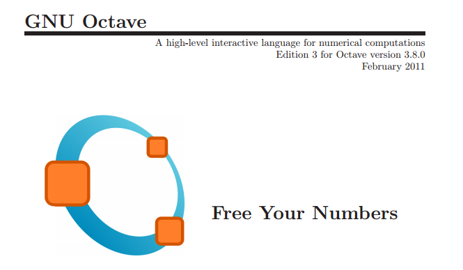

Octave en las redes sociales

La presencia de Octave en las redes sociales permite interactuar a la comunidad de usuarios de Octave, compartiendo experiencias, recursos y soluciones de problemas comunes.
- Portal de Octave: El primer sitio de referencia para Octave es el portal oficial de Octave en [1]. En este portal es donde tendremos a disposición las últimas versiones estables de Octave para los distintos sitemas operativos. Es el lugar donde está la documentación oficial de Octave. Podemos acceder a la documentación oficial a través de la red, en formato html, en [2] o en formato pdf para descargar en [3].
- Lista de correo: Existe una lista de correo en la que los usuarios de Octave plantean las dudas que les surgen y otros usuarios, o los propios desarrolladores ayudan a resolverlas. También se anuncian en la lista todas las novedades acerca de nuevas versiones, actualizaciones de los paquetes, etc. Cualquiera puede suscribirse a la lista de correo en [4]. El histórico de mensajes de la lista se puede consultar en [5]
- Twitter: La cuenta de twitter @GNUOctave, no oficial, es una cuenta que tuitea acerca de novedades y recursos relacionados con Octave. No tiene mucho movimiento, pero es interesante mirar el histórico de tuits, pues tiene una buena colección de trucos, portales interesantes y demás. Puedes acceder al perfil de @GNUOctave en [6].
- Facebook: También hay una página en Facebook dedicada a Octave. No publican posts, pero tiene una buena lista de recursos relacionados con Octave. La página se puede consultar en [7]
- Linkedin: También encontramos varias páginas en Linkedin dedicadas a usuarios de Octave. Un ejemplo lo puedes ver en [8]
- Google+: En Google+ podemos acceder al perfil de GNU OCtave en [9]
[1] Portal de Octave
[2] Documentación WEB Octave
[3] Documentación de Octave en pdf
[4] Lista de correo de usuarios de OCtave
[5] Histórico de mensajes de la lista de correo de Octave
[6] Perfil en Twitter de @GNUOctave
[7] Página Facebook de GNU OCtave
[8] Linkedin Octave users and developers
[9] Google+ GNU OCtave
{kind=link}